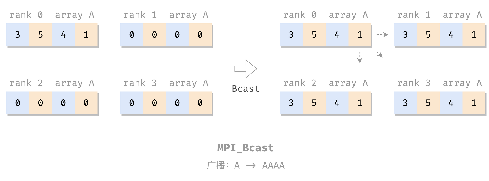
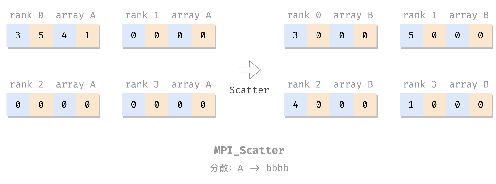
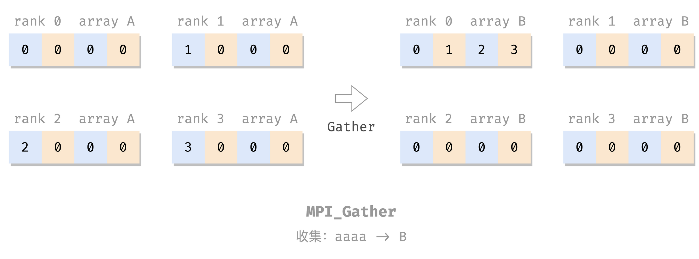

浅学 MPI。
MPI 分布式内存多处理器：
处理器 + 辅助组件 => 节点
一堆节点 => 高性能计算系统
节点之间：消息传递
MPI：消息传递接口
安装 还是用 Docker 方便。
宿主机：
1 2 3 4 5 sudo docker run -idt --name openmpi -v /home/openmpi/:/home/openmpi -p 22001:22 alpine sudo ufw allow 22001 comment 'openmpi:ssh' sudo docker exec -it openmpi sh
容器内：
1 2 3 4 5 6 7 8 9 10 11 12 13 14 15 16 17 18 19 20 21 22 23 24 apk add build-base apk add perl apk add linux-headers apk add bash vim apk add gcompat libstdc++ curl apk add openssh vi /etc/ssh/sshd_config passwd /usr/sbin/sshd wget https://download.open-mpi.org/release/open-mpi/v4.1/openmpi-4.1.4.tar.gz tar xzf openmpi-4.1.4.tar.gz cd openmpi-4.1.4./configure --prefix=/usr/local make all install cd /openmpi-4.1.4/examples/mpicc -o hello_c hello_c.c mpirun -n 4 --allow-run-as-root --oversubscribe hello_c
退出来，宿主机，把刚才装好的做成镜像备用，可以方便以后重开：
1 2 sudo docker ps sudo docker commit 37c628532bae openmpi:v0.0.0
以后再次搭这个环境就方便了：
1 2 3 4 5 6 sudo docker run -idt --name openmpi -v /home/openmpi/:/home/openmpi -p 22001:22 openmpi:v0.0.0 sudo docker exec -it openmpi-with-sshd sh 容器内
看着多是由于好多步骤是在弄 SSH，弄好了 SSH，搭集群也就方便了。但我暂时没有兴趣。
MPI 基本命令 1 2 3 4 5 6 7 8 #include <mpi.h> // 导入包 int main (int argc, char *argv[]) MPI_Init(&argc, &argv); ... MPI_Finalize(); ... }
Hello World 1 2 3 4 5 6 7 8 9 10 11 12 #include <mpi.h> #include <stdio.h> int main (int argc, char ** argv) MPI_Init(&argc, &argv); printf ("Hello, world!\n" ); MPI_Finalize(); return 0 ; }
编译运行：
1 2 3 4 5 6 $ mpicc hello.c -o hello $ mpirun -n 4 --allow-run-as-root --oversubscribe hello Hello, world! Hello, world! Hello, world! Hello, world!
（--allow-run-as-root 和 --oversubscribe 是由于我要强制在单核单线程的虚拟机里用 Docker 里的 root 用户运行 MPI 程序，正常环境上不用。）
通信器 上面的 Hello World ：无共享。每个进程做自己的，没有交互，无法协调工作。
MPI 的并发进程交互：通信器 （communicator）：
MPI 自带提供一个开箱即用的通信器：MPI_COMM_WORLD，包含该 MPI 程序的所有并发进程。
size & rank size 和 rank 是两个常用的通信器属性。
size：通信器的大小 ，即构成通信器的进程数量；rank：通信器中每个进程的标识（唯一进程 ID，$\ge 0$ 的整数），称为 rank；
两个属性的 getter（不是 setter）：
1 2 3 4 int size, rank;MPI_Comm_size(MPI_COMM_WORLD, &size); MPI_Comm_rank(MPI_COMM_WORLD, &rank);
（其实这两个函数有 int 类型的返回值，目测成功都是 0。）
e.g. 带 rank 和 size 的 Hello World：
1 2 3 4 5 6 7 8 9 10 11 12 13 14 15 16 #include <mpi.h> #include <stdio.h> int main (int argc, char ** argv) MPI_Init(&argc, &argv); int size, rank; MPI_Comm_size(MPI_COMM_WORLD, &size); MPI_Comm_rank(MPI_COMM_WORLD, &rank); printf ("Hello from rank %d out of %d processes in MPI_COMM_WORLD\n" , rank, size); MPI_Finalize(); return 0 ; }
编译运行：
1 2 3 4 5 # mpicc comm.c && mpirun -n 4 --allow-run-as-root --oversubscribe ./a.out Hello from rank 0 out of 4 processes in MPI_COMM_WORLD Hello from rank 2 out of 4 processes in MPI_COMM_WORLD Hello from rank 1 out of 4 processes in MPI_COMM_WORLD Hello from rank 3 out of 4 processes in MPI_COMM_WORLD
点对点消息
MPI 负责管理通信器内的进程之间的数据交换
MPI 数据交换的媒介：消息
源进程 rank
目标进程 rank
包含源、目的进程的通信器
标记：区分两个进程间的一组可能的消息，用户自定
发送 1 2 3 4 MPI_Send( void * message, int count, MPI_Datatype datatype, int dest, int tag, MPI_Comm comm)
发送的消息内容是：从 message 参数处开始的一个 MPI_Datatype[count] 数组 。
其中，count 是数据元素的数量（数组长度）；MPI_Datatype 为其类型，基本就是和 C 的简单数据类型一一对应：
MPI_Datatype对应的 C 数据类型
MPI_SHORTshort int
MPI_INTint
MPI_LONGlong int
MPI_LONG_LONGlong long int
MPI_UNSIGNED_CHARunsigned char
MPI_UNSIGNED_SHORTunsigned short int
MPI_UNSIGNEDunsigned int
MPI_UNSIGNED_LONGunsigned long int
MPI_UNSIGNED_LONG_LONGunsigned long long int
MPI_FLOATfloat
MPI_DOUBLEdouble
MPI_LONG_DOUBLElong double
MPI_BYTEunsigned char
再次强调，MPI 发送的是数组。单发一个数 int a 也要将其看作 int msg[1] = &a，所以写作 MPI_Send(&a, 1, MPI_INT, ...)；而如果要发送一个数组 int A[3]，则不必再取地址：MPI_Send(A, 3, MPI_INT, ...)。
再次强调，MPI 发送的是数组，理解这点后再去看 MPI 接口，就没那么魔幻了，很多都是「数组首地址 + 长度 + 类型」这三个配套出现，可能有多组这个三元组，例如 MPI_Scatter
接收 1 2 3 4 5 MPI_Recv( void * message, int count, MPI_Datatype datatype, int source, int tag, MPI_Comm comm, MPI_Status* status)
status 就是 source + tag + 可能的 error。
例子 把之前的带 rank 的 hello 改成顺序版本：
1 2 3 4 5 6 7 8 9 10 11 12 13 14 15 16 17 18 19 20 21 22 23 24 25 26 27 28 29 30 31 32 33 34 35 36 37 38 39 40 41 42 43 #include <mpi.h> #include <stdio.h> #include <stdlib.h> #include <string.h> int main (int argc, char **argv) MPI_Init(&argc, &argv); int rank, size; MPI_Comm_rank(MPI_COMM_WORLD, &rank); MPI_Comm_size(MPI_COMM_WORLD, &size); if (size == 1 ) { printf ("This example requires more than one process to execute.\n" ); MPI_Finalize(); exit (1 ); } int message[2 ]; int dst, src; int tag = 0 ; MPI_Status status; if (rank != 0 ) { message[0 ] = rank; message[1 ] = size; dst = 0 ; MPI_Send(message, 2 , MPI_INT, dst, tag, MPI_COMM_WORLD); } else { for (src = 1 ; src < size; src++) { MPI_Recv(message, 2 , MPI_INT, src, MPI_ANY_TAG, MPI_COMM_WORLD, &status); printf ("Hello from process %d out of %d.\n" , message[0 ], message[1 ]); } } MPI_Finalize(); return 0 ; }
编译运行：
1 2 3 4 $ mpicc send-recv.c && mpirun -n 4 --allow-run-as-root --oversubscribe ./a.out Hello from process 1 out of 4. Hello from process 2 out of 4. Hello from process 3 out of 4.
这个程序用上 master-worker 模式了：
rank 为 0 的进程是 master，负责顺序收消息、打印；
rank 为其他值的进程是 worker，负责发一条消息给 master；
if-else 分化 master 和 worker 的工作。
聚合通信 聚合通信：包含通信器内的所有进程的通信模式（群消息）
同步：Barrier Barrier：栅栏：
栅（zhà）栏，居然不是读 shān，我说咋老是打不出来。。。另外原来 zhà 栏是这个字啊，从未设想过😭
1 MPI_Barrier(MPI_Comm comm)
e.g. 又一个 Hello World：
1 2 3 4 5 6 7 8 9 10 11 12 13 14 15 16 17 18 19 20 21 22 23 #include <mpi.h> #include <stdio.h> int main (int argc, char ** argv) MPI_Init(&argc, &argv); MPI_Barrier(MPI_COMM_WORLD); int size, rank; MPI_Comm_size(MPI_COMM_WORLD, &size); MPI_Comm_rank(MPI_COMM_WORLD, &rank); int len; char name[MPI_MAX_PROCESSOR_NAME]; MPI_Get_processor_name(name, &len); MPI_Barrier(MPI_COMM_WORLD); printf ("Hello, world! Process %d of %d on %s\n" , rank, size, name); MPI_Finalize(); return 0 ; }
编译运行：
1 2 3 4 5 $ mpicc barrier.c && mpirun -n 4 --allow-run-as-root --oversubscribe ./a.out Hello, world! Process 0 of 4 on c8e9719000d7 Hello, world! Process 2 of 4 on c8e9719000d7 Hello, world! Process 3 of 4 on c8e9719000d7 Hello, world! Process 1 of 4 on c8e9719000d7
联想：OpenMP 的 barrier 指令 。
广播：Bcast 
1 2 3 4 MPI_Bcast( void *shared_data, int count, MPI_Datatype datatype, int root, MPI_Comm comm)
把 root 的 shared_data 广播（同步）给各进程的 shared_data 里。
e.g.
1 2 3 4 5 6 7 8 9 10 11 12 13 14 15 16 17 18 19 20 21 22 23 24 25 26 27 28 29 30 31 #include <mpi.h> #include <stdio.h> int main (int argc, char ** argv) MPI_Init(&argc, &argv); int size, rank; MPI_Comm_size(MPI_COMM_WORLD, &size); MPI_Comm_rank(MPI_COMM_WORLD, &rank); int A[4 ]; for (int i = 0 ; i < 4 ; i++) { A[i] = 0 ; } int root = 0 ; if (rank == root) { A[0 ] = 3 ; A[1 ] = 5 ; A[2 ] = 4 ; A[3 ] = 1 ; } MPI_Bcast(A, 4 , MPI_INT, root, MPI_COMM_WORLD); printf ("Rank %d: A = [%d, %d, %d, %d]\n" , rank, A[0 ], A[1 ], A[2 ], A[3 ]); MPI_Finalize(); return 0 ; }
编译运行：
1 2 3 4 5 $ mpicc bcast.c && mpirun -n 4 --allow-run-as-root --oversubscribe ./a.out Rank 0: A = [3, 5, 4, 1] Rank 1: A = [3, 5, 4, 1] Rank 2: A = [3, 5, 4, 1] Rank 3: A = [3, 5, 4, 1]
分散：Scatter 
1 2 3 4 MPI_Scatter( void *send_data, int send_count, MPI_Datatype send_type, void *recv_data, int recv_count, MPI_Datatype recv_type, int root, MPI_Comm comm);
把 root 的 send_data 分散到各个进程的 recv_data 里，包括自己的，每个人发 send_count 个。
e.g.
1 2 3 4 5 6 7 8 9 10 11 12 13 14 15 16 17 18 19 20 21 22 23 24 25 26 27 28 29 30 31 32 33 34 35 36 37 38 39 40 41 42 43 #include <mpi.h> #include <stdio.h> #include <stdlib.h> int main (int argc, char ** argv) MPI_Init(&argc, &argv); int size, rank; MPI_Comm_size(MPI_COMM_WORLD, &size); MPI_Comm_rank(MPI_COMM_WORLD, &rank); if (size != 4 ) { printf ("This example requires 4 processes to execute.\n" ); MPI_Finalize(); exit (1 ); } int A[4 ], B[4 ]; for (int i = 0 ; i < 4 ; i++) { A[i] = 0 ; B[i] = 0 ; } int root = 0 ; if (rank == root) { A[0 ] = 3 ; A[1 ] = 5 ; A[2 ] = 4 ; A[3 ] = 1 ; } MPI_Scatter(A, 1 , MPI_INT, B, 1 , MPI_INT, root, MPI_COMM_WORLD); printf ("Rank %d: A = [%d, %d, %d, %d], B = [%d, %d, %d, %d]\n" , rank, A[0 ], A[1 ], A[2 ], A[3 ], B[0 ], B[1 ], B[2 ], B[3 ]); MPI_Finalize(); return 0 ; }
编译运行：
1 2 3 4 5 $ mpicc scatter.c && mpirun -n 4 --allow-run-as-root --oversubscribe ./a.out Rank 0: A = [3, 5, 4, 1], B = [3, 0, 0, 0] Rank 1: A = [0, 0, 0, 0], B = [5, 0, 0, 0] Rank 2: A = [0, 0, 0, 0], B = [4, 0, 0, 0] Rank 3: A = [0, 0, 0, 0], B = [1, 0, 0, 0]
收集：Gather 
1 2 3 4 MPI_Gather( void *send_data, int send_count, MPI_Datatype send_type, void *recv_data, int recv_count, MPI_Datatype recv_type, int dest, MPI_Comm comm);
MPI_Gather 就是做反向的 MPI_Scatter ：把各个进程的 send_data 收集到 dest 的 recv_data 里。
e.g.
1 2 3 4 5 6 7 8 9 10 11 12 13 14 15 16 17 18 19 20 21 22 23 24 25 26 27 28 29 30 31 32 33 34 #include <mpi.h> #include <stdio.h> #include <stdlib.h> int main (int argc, char ** argv) MPI_Init(&argc, &argv); int size, rank; MPI_Comm_size(MPI_COMM_WORLD, &size); MPI_Comm_rank(MPI_COMM_WORLD, &rank); int A[4 ], B[4 ]; for (int i = 0 ; i < 4 ; i++) { A[i] = 0 ; B[i] = 0 ; } A[0 ] = rank; int dest = 0 ; MPI_Gather(A, 1 , MPI_INT, B, 1 , MPI_INT, dest, MPI_COMM_WORLD); printf ("Rank %d: A = [%d, %d, %d, %d], B = [%d, %d, %d, %d]\n" , rank, A[0 ], A[1 ], A[2 ], A[3 ], B[0 ], B[1 ], B[2 ], B[3 ]); MPI_Finalize(); return 0 ; }
编译运行：
1 2 3 4 5 $ mpicc gather.c && mpirun -n 4 --allow-run-as-root --oversubscribe ./a.out Rank 0: A = [0, 0, 0, 0], B = [0, 1, 2, 3] Rank 1: A = [1, 0, 0, 0], B = [0, 0, 0, 0] Rank 2: A = [2, 0, 0, 0], B = [0, 0, 0, 0] Rank 3: A = [3, 0, 0, 0], B = [0, 0, 0, 0]
全局收集：Allgather
1 2 3 4 MPI_Gather( void *send_data, int send_count, MPI_Datatype send_type, void *recv_data, int recv_count, MPI_Datatype recv_type, MPI_Comm comm);
类似于 MPI_Gather ，但是收集的结果是广播到所有进程上的，而不是上缴到 dest（所以也就没这个参数了）。
e.g.
1 2 3 4 5 6 7 8 9 10 11 12 13 14 15 16 17 18 19 20 21 22 23 24 25 26 27 28 29 30 31 32 #include <mpi.h> #include <stdio.h> #include <stdlib.h> int main (int argc, char ** argv) MPI_Init(&argc, &argv); int size, rank; MPI_Comm_size(MPI_COMM_WORLD, &size); MPI_Comm_rank(MPI_COMM_WORLD, &rank); int A[4 ], B[4 ]; for (int i = 0 ; i < 4 ; i++) { A[i] = 0 ; B[i] = 0 ; } A[0 ] = rank; MPI_Allgather(A, 1 , MPI_INT, B, 1 , MPI_INT, MPI_COMM_WORLD); printf ("Rank %d: A = [%d, %d, %d, %d], B = [%d, %d, %d, %d]\n" , rank, A[0 ], A[1 ], A[2 ], A[3 ], B[0 ], B[1 ], B[2 ], B[3 ]); MPI_Finalize(); return 0 ; }
编译运行：
1 2 3 4 5 $ mpicc allgather.c && mpirun -n 4 --allow-run-as-root --oversubscribe ./a.out Rank 0: A = [0, 0, 0, 0], B = [0, 1, 2, 3] Rank 1: A = [1, 0, 0, 0], B = [0, 1, 2, 3] Rank 2: A = [2, 0, 0, 0], B = [0, 1, 2, 3] Rank 3: A = [3, 0, 0, 0], B = [0, 1, 2, 3]
规约：Reduce 关于「规约」、「reduce」的词意以及这个过程的示意图，见 OpenMP 的 reduction 指令 。
1 2 3 4 MPI_Reduce(const void *send_data, void *recv_data, int count, MPI_Datatype datatype, MPI_Op op, int dest, MPI_Comm comm);
每个进程发 count 个 datatype 类型的本地结果 send_data 到 dest，dest 将这些结果做 op 运算，结果放到 recv_data。
op 可以是：
MPI_MAX、MPI_MINMPI_SUM、MPI_PRODMPI_LAND（逻辑与）、MPI_BAND（按位与），类似的还有 OR、XOR。要求 datatype 是整型MPI_MAXLOC（最大值和 其位置）、MPI_MINLOC。要求 datatype 是对：MPI_DOUBLE_INT 或 MPI_2INI
e.g. 计算两个向量的点积：$a \cdot b = \sum_i a_i b_i$：
具体来说就是做这件事：
$$
其中，最后一个等号右边每一行由一个进程来算，行之间加起来用 reduce 来做。
1 2 3 4 5 6 7 8 9 10 11 12 13 14 15 16 17 18 19 20 21 22 23 24 25 26 27 28 29 30 31 32 33 34 35 36 37 38 39 40 41 42 43 44 45 46 #include <mpi.h> #include <stdio.h> #include <stdlib.h> int main (int argc, char **argv) MPI_Init(&argc, &argv); int size, rank; MPI_Comm_size(MPI_COMM_WORLD, &size); MPI_Comm_rank(MPI_COMM_WORLD, &rank); int local_vector_size = 100 ; int global_vector_size = size * local_vector_size; double *a, *b; a = (double *) malloc (local_vector_size * sizeof (double )); b = (double *) malloc (local_vector_size * sizeof (double )); for (int i = 0 ; i < local_vector_size; i++) { a[i] = 1.0 * rank; b[i] = 2.0 ; } double partial_sum = 0.0 ; for (int i = 0 ; i < local_vector_size; i++) { partial_sum += a[i] * b[i]; } int root = 0 ; double sum = 0.0 ; MPI_Reduce(&partial_sum, &sum, 1 , MPI_DOUBLE, MPI_SUM, root, MPI_COMM_WORLD); if (rank == root) { printf ("The dot product is %g\n" , sum); } free (a); free (b); MPI_Finalize(); return 0 ; }
编译运行：
1 2 $ mpicc reduce.c && mpirun -n 4 --allow-run-as-root --oversubscribe ./a.out The dot product is 1200
全局规约：Allreduce 类似于从 MPI_GatherMPI_AllgatherMPI_Allreduce 做 MPI_Reduce
1 2 3 4 MPI_Allreduce(const void *send_data, void *recv_data, int count, MPI_Datatype datatype, MPI_Op op, MPI_Comm comm);
e.g.
1 2 3 4 5 6 7 8 9 10 11 12 13 14 15 16 17 18 19 20 21 22 23 24 25 #include <mpi.h> #include <stdio.h> int main (int argc, char **argv) MPI_Init(&argc, &argv); int size, rank; MPI_Comm_size(MPI_COMM_WORLD, &size); MPI_Comm_rank(MPI_COMM_WORLD, &rank); int input = 0 ; switch (rank) { case 0 : input = 2 ; break ; case 1 : input = 7 ; break ; case 2 : input = 1 ; break ; } int output; MPI_Allreduce(&input, &output, 1 , MPI_INT, MPI_SUM, MPI_COMM_WORLD); printf ("Rank %d: result = %d.\n" , rank, output); MPI_Finalize(); return 0 ; }
编译运行：
1 2 3 4 5 $ mpicc allreduce.c && mpirun -n 4 --allow-run-as-root --oversubscribe ./a.out Rank 3: result = 10. Rank 1: result = 10. Rank 2: result = 10. Rank 0: result = 10.
全局到全局：Alltoall alltoall 通信模式：
每个发送器也是接收器；
不同的数据被发送到每个接收器：第 i 个数据分区被发送到第 j 个进程；
用每行表示一个进程，每列表示一个数据分区，则 alltoall 的效果类似于矩阵转置：
我的理解是 Alltoall = Allscatter，不知道对不对哈：
作 sender：每个进程把自己的数组 A 做 Scatter
作 recver：进程 i 把各个进程发来的数（A[i] from j）按 sender 的 rank j 拼成新数组 B：B[j] = A[i] form j。
1 2 3 4 MPI_Alltoall( void *send_data, int send_count, MPI_Datatype send_type, void *recv_data, int recv_count, MPI_Datatype recv_type, MPI_Comm comm);
e.g.
1 2 3 4 5 6 7 8 9 10 11 12 13 14 15 16 17 18 19 20 21 22 23 24 25 26 27 28 29 30 31 #include <assert.h> #include <mpi.h> #include <stdio.h> #include <stdlib.h> #include <unistd.h> int main (int argc, char **argv) MPI_Init(&argc, &argv); int size, rank; MPI_Comm_size(MPI_COMM_WORLD, &size); MPI_Comm_rank(MPI_COMM_WORLD, &rank); assert((size == 4 ) && "this example is designed for 4 processes." ); int A[4 ], B[4 ]; for (int i = 0 ; i < 4 ; i++) { A[i] = i + 1 + 4 * rank; } MPI_Alltoall(A, 1 , MPI_INT, B, 1 , MPI_INT, MPI_COMM_WORLD); sleep(rank); printf ("Rank %d: A = [%2d, %2d, %2d, %2d], B = [%2d, %2d, %2d, %2d]\n" , rank, A[0 ], A[1 ], A[2 ], A[3 ], B[0 ], B[1 ], B[2 ], B[3 ]); MPI_Finalize(); return 0 ; }
编译运行：
1 2 3 4 5 $ mpicc alltoall.c && mpirun -n 4 --allow-run-as-root --oversubscribe ./a.out Rank 0: A = [ 1, 2, 3, 4], B = [ 1, 5, 9, 13] Rank 1: A = [ 5, 6, 7, 8], B = [ 2, 6, 10, 14] Rank 2: A = [ 9, 10, 11, 12], B = [ 3, 7, 11, 15] Rank 3: A = [13, 14, 15, 16], B = [ 4, 8, 12, 16]
非阻塞通信 上文的 点对点消息 和 聚合通信 都是阻塞的：发/收 完成之前，函数不会返回。
MPI 还提供了非阻塞的接口：
1 2 3 4 5 6 7 8 9 10 11 12 13 14 15 16 MPI_Isend( void * message, int count, MPI_Datatype datatype, int dest, int tag, MPI_Comm comm, MPI_Request *send_request) MPI_Irecv( void * message, int count, MPI_Datatype datatype, int source, int tag, MPI_Comm comm, MPI_Request *recv_request)
就是函数名 MPI_Xxx -> MPI_Ixxx，参数最后加一个 MPI_Request，用于跟踪该异步通信。这些函数在调用后立即返回。
欲知异步通信是否完成，使用 MPI_Test，把 MPI_Ixxx 的 request 传进来，检查，已完成则置 flag 的值为真：
1 MPI_Test(MPI_Request *request, int *flag, MPI_Status *status);
在必须完成异步通信时，使用 MPI_Wait，阻塞，等通信完成：
1 MPI_Wait(MPI_Request *request, MPI_Status *status);
用非阻塞通信有一个好处是，可以防呆，避免一些程序顺序瑕疵可能带来的死锁问题。考虑如下程序：
1 2 3 4 5 6 7 8 9 10 11 12 13 14 15 16 17 18 19 20 21 22 23 24 25 26 #include <assert.h> #include <mpi.h> #include <stdio.h> #include <stdlib.h> int main (int argc, char **argv) MPI_Init(&argc, &argv); int rank, size; MPI_Comm_rank(MPI_COMM_WORLD, &rank); MPI_Comm_size(MPI_COMM_WORLD, &size); assert(size == 2 ); int tag = 0 ; int a = rank, b = -1 ; MPI_Send(&a, 1 , MPI_INT, 1 - rank, tag, MPI_COMM_WORLD); MPI_Recv(&b, 1 , MPI_INT, 1 - rank, tag, MPI_COMM_WORLD, MPI_STATUS_IGNORE); printf ("Rank %d: recv value %d.\n" , rank, b); MPI_Finalize(); return 0 ; }
send 在前，recv 在后，可以工作。但如果交换二者顺序，就直接死锁（都先 recv，但没人发啊）：
1 2 3 MPI_Recv(&b, 1 , MPI_INT, 1 - rank, tag, MPI_COMM_WORLD, MPI_STATUS_IGNORE); MPI_Send(&a, 1 , MPI_INT, 1 - rank, tag, MPI_COMM_WORLD);
改成非阻塞通信：
1 2 3 4 5 6 7 8 9 10 11 12 13 14 15 16 17 18 19 20 21 22 23 24 25 26 27 28 29 30 31 32 33 #include <assert.h> #include <mpi.h> #include <stdio.h> #include <stdlib.h> int main (int argc, char **argv) MPI_Init(&argc, &argv); int rank, size; MPI_Comm_rank(MPI_COMM_WORLD, &rank); MPI_Comm_size(MPI_COMM_WORLD, &size); assert(size == 2 ); int tag = 0 ; MPI_Status status; MPI_Request send_req, recv_req; int a = rank, b = -1 ; MPI_Isend(&a, 1 , MPI_INT, 1 - rank, tag, MPI_COMM_WORLD, &send_req); MPI_Irecv(&b, 1 , MPI_INT, 1 - rank, tag, MPI_COMM_WORLD, &recv_req); MPI_Wait(&send_req, &status); MPI_Wait(&recv_req, &status); printf ("Rank %d: recv value %d.\n" , rank, b); MPI_Finalize(); return 0 ; }
编译运行：
1 2 Rank 0 : recv value 1. Rank 1 : recv value 0.
交换 Isend 和 Irecv，程序也正常工作。交换两句 Wait，也正常工作。所以这个就很舒服了。
自定义数据类型 1 2 3 4 5 6 7 MPI_Type_create_struct(int count, const int array_of_block_lengths[], const MPI_Aint array_of_displacements[], const MPI_Datatype array_of_types[], MPI_Datatype *newtype); MPI_Type_commit(MPI_Datatype *newtype);
e.g.
1 2 3 4 5 6 7 8 9 10 11 12 13 14 15 16 17 18 19 20 21 22 23 24 25 26 27 28 29 30 31 32 33 34 35 36 37 38 39 40 41 42 43 44 45 46 47 48 49 50 51 52 53 54 55 #include <mpi.h> #include <stdio.h> #include <stdlib.h> typedef struct { int x; double y; } Pair; int main (int argc, char **argv) MPI_Init(&argc, &argv); int rank, size; MPI_Comm_rank(MPI_COMM_WORLD, &rank); MPI_Comm_size(MPI_COMM_WORLD, &size); MPI_Datatype mpi_pair; int nitems = 2 ; MPI_Datatype types[nitems]; MPI_Aint offsets[nitems]; int blocklengths[nitems]; types[0 ] = MPI_INT; offsets[0 ] = offsetof(Pair, x); blocklengths[0 ] = 1 ; types[1 ] = MPI_DOUBLE; offsets[1 ] = offsetof(Pair, y); blocklengths[1 ] = 1 ; MPI_Type_create_struct(nitems, blocklengths, offsets, types, &mpi_pair); MPI_Type_commit(&mpi_pair); int root = 0 ; Pair pair ; if (rank == root) { pair .x = 10 ; pair .y = 3.14 ; } MPI_Bcast(&pair , 1 , mpi_pair, root, MPI_COMM_WORLD); printf ("Rank %d: recv Pair{x=%d, y=%g}\n" , rank, pair .x, pair .y); MPI_Finalize(); return 0 ; }
编译运行：
1 2 3 4 5 $ mpicc newtype.c && mpirun -n 4 --allow-run-as-root --oversubscribe ./a.out Rank 0: recv Pair{x=10, y=3.14} Rank 1: recv Pair{x=10, y=3.14} Rank 3: recv Pair{x=10, y=3.14} Rank 2: recv Pair{x=10, y=3.14}
参考文献
EOF